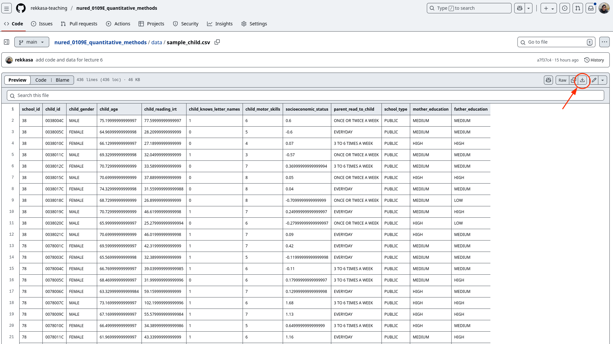
Εισαγωγή και επεξεργασία δεδομένων
Εισαγωγή δεδομένων
Για τις ανάγκες της ανάλυσης θα χρησιμοποιήσουμε τα δεδομένα που βρίσκονται εδώ. Για να τα κατεβάσετε απλά πατάτε το κουμπί download στο πάνω δεξιά μέρος της σελίδας.
Το αρχείο που θα κατέβει ονομάζεται sample_child.csv. Αρχεία αυτού του τύπου (csv) μπορείτε να τα ανοίξετε με το excel ή ακόμα και με ένα πρόγραμμα όπως το σημειωματάριο. Τα αρχεία αυτά χρησιμοποιούν κόμματα για να ορίσουν μέτρηση για μια νέα μεταβλητή.
Αν έχετε ανοιχτό το πρόγραμμα Jamovi, μπορείτε να εισάγετε τα δεδομένα στο που κατεβάσατε ακολυθώντας τις εικόνες παρακάτω:
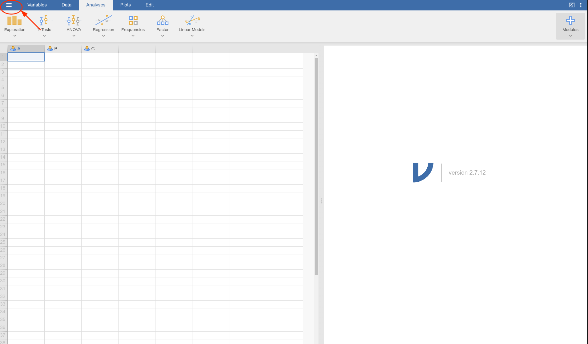
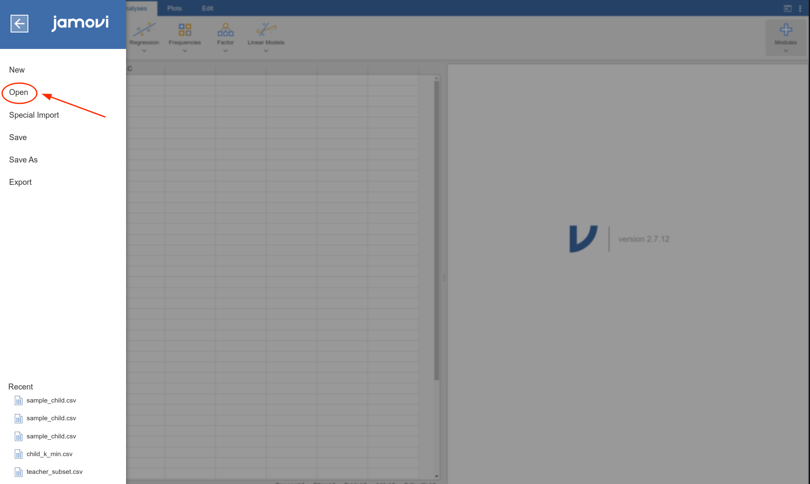
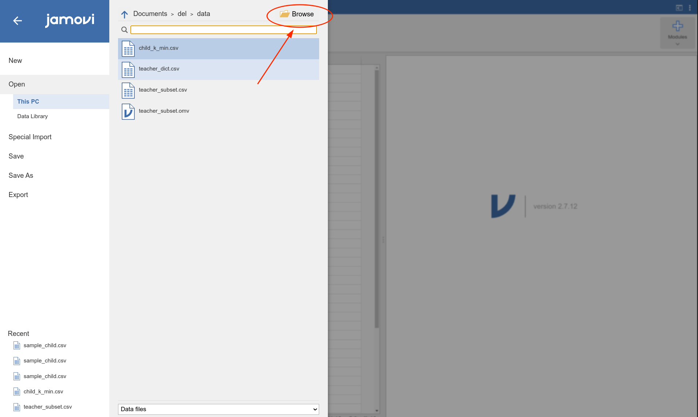
Αν όλα πάνε καλά θα έχετε τα δεδομένα σας μέσα στο Jamovi, όπως φαίνεται στο Figure 3.
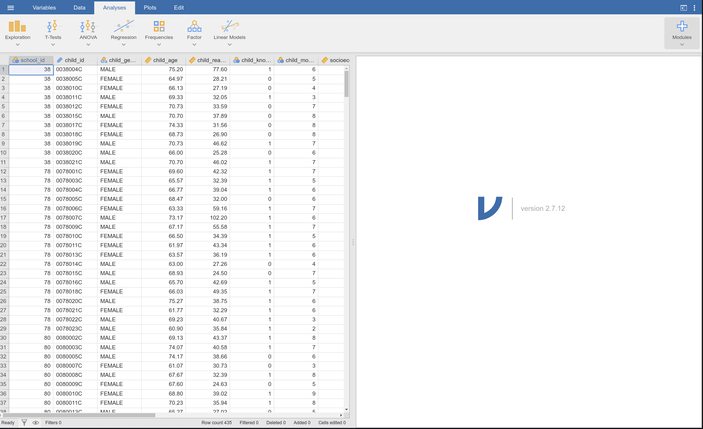
Αρχική επεξεργασία
Όταν εισάγουμε τα δεδομένα μας, το Jamovi κάνει ό,τι μπορεί για να προβλέψει τον τύπο των μεταβλητών. Δυστυχώς, δεν κάνει πάντα την καλύτερη δουλειά. Γι’αυτό είναι σημαντικό, μετά από την εισαγωγή των δεδομένων, πάντα να κάνετε έναν έλεγχο στον τύπο των μεταβλητών που φορτώθηκαν. Το Jamovi χρησιμοποιεί 4 είδη μεταβλητών:
- Αναγνωριστικές μεταβλητές (ID). Αυτές χρησιμοποιούνται για να δώσουν έναν αναγνωριστικό (συνήθως) αριθμό σε κάθε π.χ. άτομο, σχολείο κτλ. Τις περισσότερες φορές, τέτοιες μεταβλητές δεν παίζουν και μεγάλο ρόλο στις αναλύσεις μας. Στο Jamovi αυτές συμβολίζονται με ένα μικρό ταμπελάκι.
- Ονομαστικές μεταβλητές (Nominal variables). Αυτές οι μεταβλητές μας δίνουν κατηγορίες οι οποίες δεν μπορούν να διαταχθούν. Για παράδειγμα το φύλο ή το χρώμα της τσάντας των μαθητών. Το μπλε δεν μπορούμε να πούμε ότι είναι “μεγαλύτερο” ή “μικρότερο” από το κόκκινο. Στο Jamovi αυτές συμβολίζονται με τρεις τεμνόμενους κύκλους.
- Διατάξιμες μεταβλητές (Ordinal variables). Αυτές οι μεταβλητές μετριούνται σε κατηγορίες που μπορούν με κάποιον τρόπο να διαταχθούν. Για παράδειγμα, σε ένα ερωτηματολόγιο το επίπεδο συμφωνίας με μία δήλωση μπορεί να δηλώνεται ως “Καθόλου”, “Λίγο”, “Πολύ”, “Απολύτως”. Σε αυτήν την περίπτωση, το “Λίγο” ξέρουμε ότι είναι μικρότερο από το “Απολύτως”, αν και δεν έχουμε εικόνα πόσο “απέχει” το “Λίγο” από το “Απολύτως”. Στο Jamovi αυτές συμβολίζονται με μία σκάλα.
- Συνεχείς μεταβλητές (Continuous variables). Αυτές οι μεταβλητές μετριούνται σε μία συνεχή αριθμητική κλίμακα. Για παράδειγμα, το ύψος και το βάρος των μαθητών σε μία τάξη είναι συνεχείς μεταβλητές. Ένα ύψος 110 εκατοστών είναι μεγαλύτερο από ένα ύψος 100 εκατοστών. Συγχρόνως, ξέρουμε και πόσο μεγαλύτερο είναι το πρώτο ύψος από το δεύτερο (10 εκατοστά). Στο Jamovi αυτές συμβολίζονται με έαν χάρακα.
Αν δούμε τα στο συγκεκριμένο αρχείο, έχουμε μία μεταβλητή που ονομάζεται school_id την οποία το Jamovi θεώρησε ονομαστική (Figure 4).
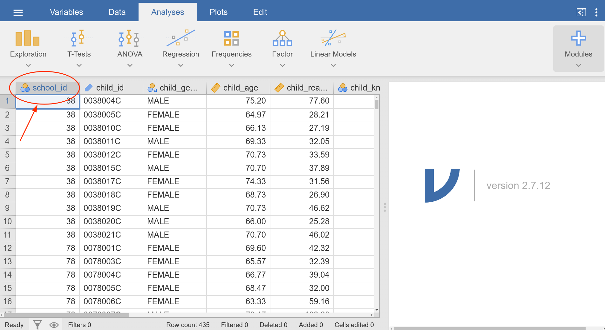
Για να αλλάξουμε τον τύπο της μεταβλητής κάνουμε διπλό κλικ επάνω της και οδηγούμαστε στο μενού αλλαγής της μεταβλητής. Από εκεί διαλέγουμε την επιλογή ID και μετατρέπουμε τη school_id από ονομαστική σε αναγνωριστική (Figure 5).
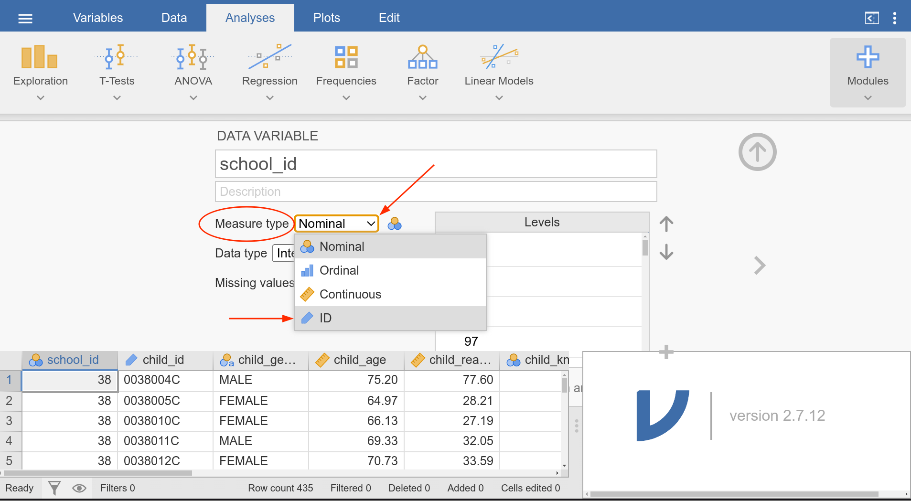
Αν κοιτάξουμε και τις υπόλοιπες μεταβλητές, θα δούμε και άλλες περιπτώσεις που το Jamovi δεν έκανε καλή ερμηνεία του τύπου των μεταβλητών. Για παράδειγμα, η μεταβλητή parent_read_to_child που μας περιγράφει τη συχνότητα μέσα στην εβδομάδα που οι γονείς διαβάζουν στο παιδί είναι ονομαστική ενώ κανονικά θα έπρεπε να είναι διατάξιμη. Οι τιμές της πηγαίνουν από το καθόλου έως κάθε μέρα.
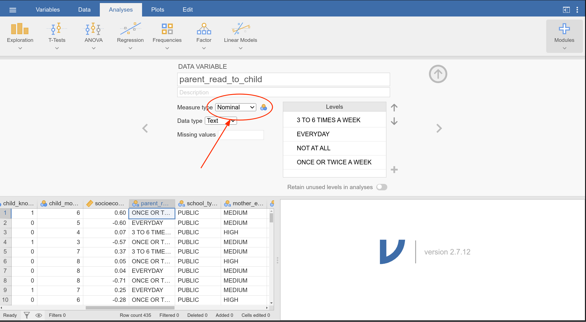
Η αλλαγή αυτή γίνεται σε δύο βήματα. Το πρώτο βήμα είναι το ίδιο με το Figure 5, και περιλαμβάνει την αλλαγή του τύπου της μεταβλητής. Στο δεύτερο βήμα πρέπει να αναδιατάξουμε τις τιμές της μεταβλητής, ώστε να αντικατοπτρίζουν τη διάταξη. Συνήθως, βάζομε τις αλλαγές σε αύξουσα σειρά, από τη μικρότερη τιμή στη μεγαλύτερη (Figure 7).
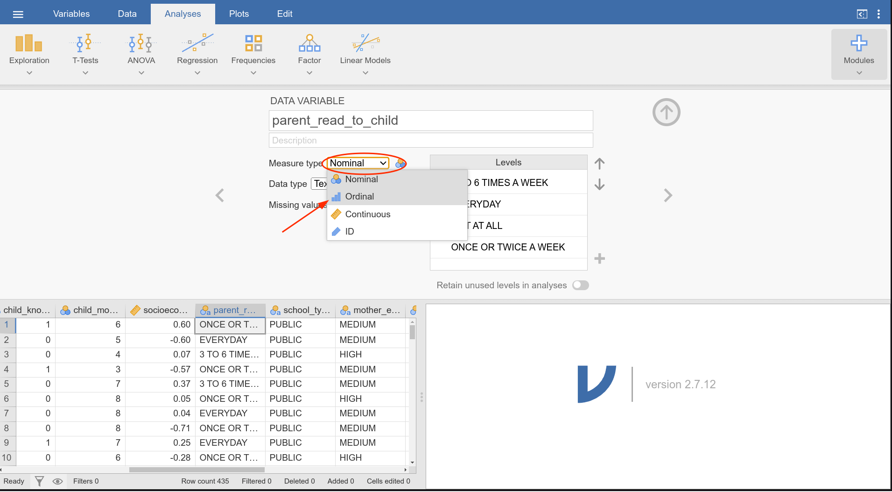
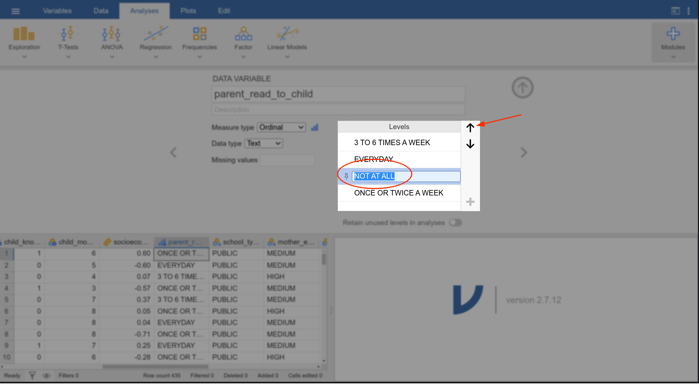
Στο τέλος, η μεταβλητή parent_read_to_child θα πρέπει να έχει τη μορφή που φαίνεται στο Figure 8.
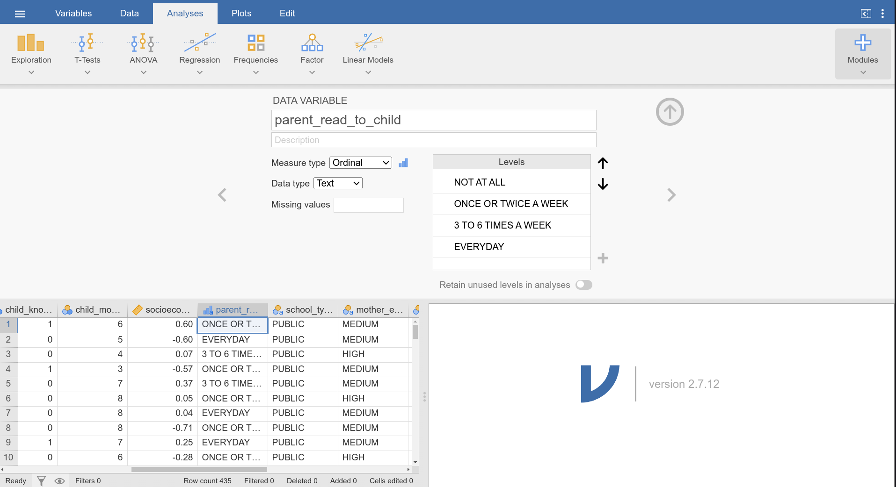
parent_read_to_child μετά τις αλλαγές.
Με τον ίδιο τρόπο αλλάζουμε και τον τύπο των μεταβλητών mother_education και father_education, οι οποίες πάλι θα έπρεπε να είναι διατάξιμες αλλά έχουν εισαχθεί ως ονομαστικές.